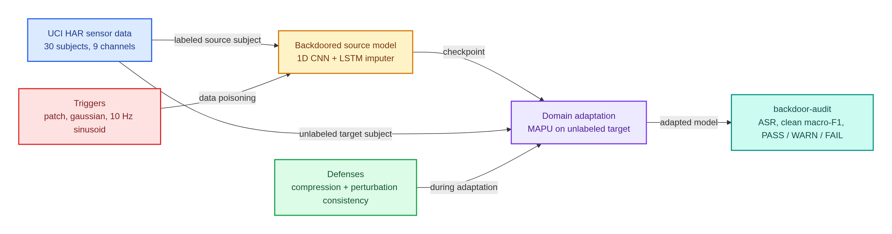

|
Abid Hasan Zim
“The important thing is not to stop questioning. Curiosity has its own reason for existence.”
– Albert Einstein
I am pursuing an M.S. in Computer Science at the University of Nebraska at Omaha. My research interests span machine learning, deep learning, computer vision, and robotics. I am primarily focused on making AI more affordable and accessible worldwide. Earlier, I graduated from AMU in India.
Email /
Google Scholar /
LinkedIn /
GitHub
|
|
|
News
- January, 2026: Started M.S. in Computer Science at the University of Nebraska at Omaha.
- October, 2024: One paper accepted at WACV 2025.
|
|
Selected Publications
See my Google Scholar profile for the complete and most recent publications.
|
Projects
|
STDA: Secure Time-Series Domain Adaptation

Backdoor attacks and defenses for time-series transfer learning: data-poisoning triggers survive MAPU domain adaptation, and a compression + perturbation consistency defense cuts attack success from 53% to 13% on held-out subject pairs.
Python, PyTorch, ML Security, Domain Adaptation / GitHub
|
|
|
{kind=link}
{kind=link}
{kind=link}
{kind=link}